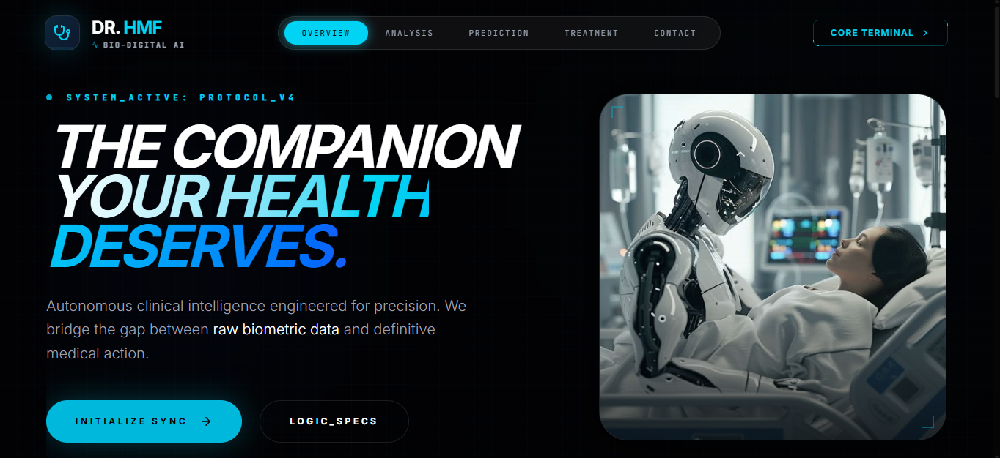
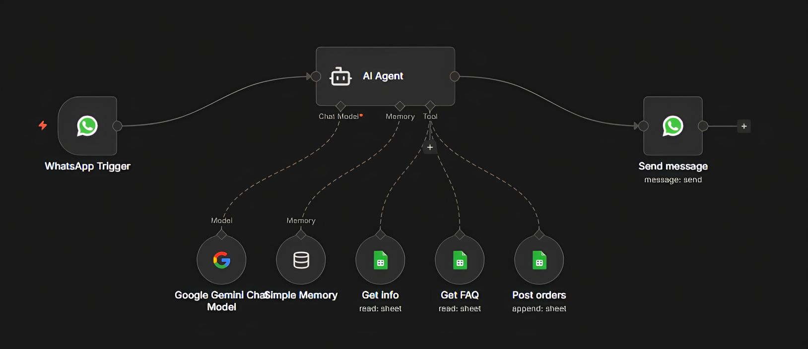
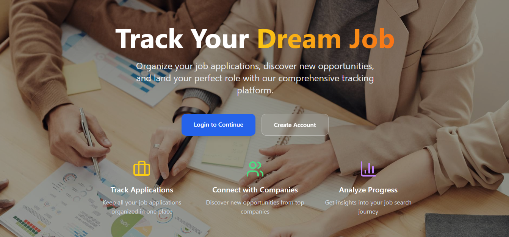
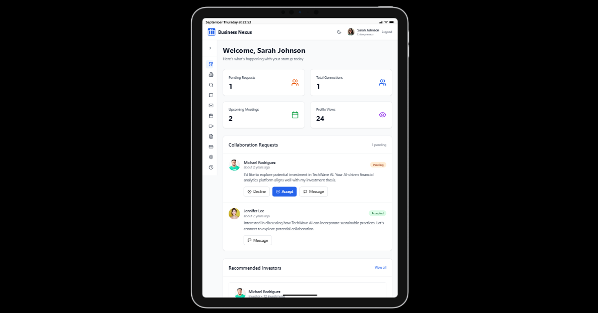
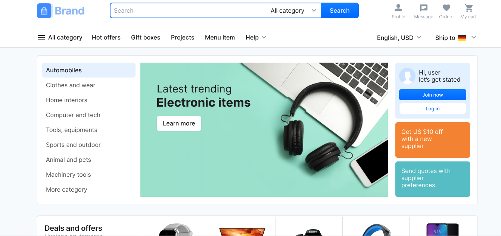

Six things I actually built
Dr.HMF — AI Medical Agent
classification · ML
People describing symptoms in plain language have no fast way to get a shortlist of likely conditions before seeing a doctor — most tools either need exact medical terms or give one flat answer with no confidence signal.
// approachFramed as a multi-class classification task: given a symptom description, predict the condition, evaluated with macro F1 (not plain accuracy) since common conditions vastly outnumber rare ones in training data, and top-3 accuracy as a realistic, safe bar for a decision-support tool.
An end-to-end assistant that takes structured or free-text symptom input and returns a confidence-ranked shortlist of likely conditions, with supporting guidance rather than a single unexplained answer.
// resultCorrectly frames diagnosis as decision support, not a final answer — the top-3 shortlist format matches how a person would actually use it alongside a real doctor.
WhatsApp Chatbot
conversational agent
Manually replying to repetitive customer questions on WhatsApp doesn't scale, and generic auto-replies feel robotic and lose leads.
// approachBuilt a conversational agent that handles real back-and-forth conversation rather than single-shot replies, keeping context across a conversation thread.
An AI-powered conversational agent integrated with WhatsApp, capable of understanding intent and responding naturally across multi-turn conversations.
// resultReduced manual reply workload for repetitive queries while keeping conversations natural rather than obviously scripted.
Job Tracker
platform
Job seekers juggling multiple applications across different boards lose track of status, deadlines, and follow-ups.
// approachDesigned as a professional platform for job discovery and networking in one place, rather than a spreadsheet workaround.
A full platform for tracking job discovery and networking activity, built end-to-end as a full-stack application.
// resultCentralizes what was previously scattered across email, spreadsheets, and job board tabs.
Business Nexus
platform
Entrepreneurs and investors often lack a dedicated, structured space to discover and connect with each other.
// approachBuilt as a next-generation digital platform purpose-built for connecting the two sides directly.
A full platform connecting entrepreneurs and investors, covering discovery and connection in one product.
// resultGives both sides a dedicated space instead of relying on generic networking platforms.
E-commerce Website
full-stack store
A business needed a complete, working online store rather than a template with placeholder checkout flows.
// approachBuilt a full-stack online store covering the real path from browsing to checkout.
A complete full-stack e-commerce site, from product listing through checkout.
// resultA working store, not a static mockup of one.
EventNest & TechCorp
earlier workAn event management web application for organizing and running events end to end.
An analytics dashboard built for freelance clients to track their own metrics.